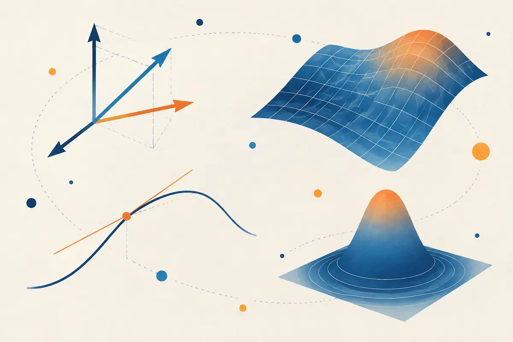
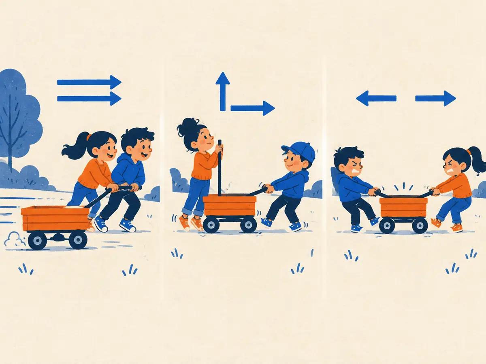

Vectors & dot products
Inside an LLM, every token, every query and every hidden state is a vector: a list of numbers. And the most common question the model asks about two vectors is "how much do these point the same way?" The answer is one tiny operation, the dot product.

By the end you can
- Compute a vector's length and the dot product of two vectors by hand.
- Explain the geometric meaning $a\cdot b = \lVert a\rVert\,\lVert b\rVert\cos\theta$ and what its sign tells you.
- Compute cosine similarity, and say why embeddings and attention rely on it.
Take your best guess. Being wrong now helps the right answer stick later.
What is the dot product of $(3, 1)$ and $(1, 2)$?
- $(3, 2)$
- $4$
- $5$
- $7$
Two arrows meet at a right angle (90°). Their dot product is…
- as large as possible
- zero
- negative
- it depends only on how long they are
A vector is a list of numbers (and an arrow)
To a programmer, a vector is just an array: a = [3, 1]. Each entry is called a component. With two components you can draw it: start at the origin, go 3 right and 1 up, and draw an arrow. The list and the arrow are the same object, seen two ways.
LLMs use the same idea with far more components. A token embedding in a 7-billion-parameter model such as Llama 2 7B has 4,096 of them. Nobody can draw 4,096 dimensions, but every rule in this lesson works identically, because each rule is a loop over the components.
Two basic moves, both done entry by entry:
- Add vectors: $(3, 1) + (1, 2) = (4, 3)$. As arrows: put the second one's tail on the first one's tip.
- Scale a vector by a number: $2 \times (3, 1) = (6, 2)$. Same direction, twice as long.
The length (or norm) of a vector is Pythagoras, extended to any number of components:
$$\lVert a\rVert = \sqrt{a_1^2 + a_2^2 + \dots + a_n^2}$$Here $a_i$ is the $i$-th component and $n$ is how many there are. For $a = (3, 1)$: $\lVert a\rVert = \sqrt{9 + 1} = \sqrt{10} \approx 3.16$.
The dot product, two ways
Algebra: multiply matching components, then add everything up:
$$a \cdot b = a_1 b_1 + a_2 b_2 + \dots + a_n b_n = \sum_{i=1}^{n} a_i b_i$$In code it's one line: sum(x * y for x, y in zip(a, b)), or a @ b in NumPy and PyTorch. Geometry: the very same number equals
where $\theta$ (theta) is the angle between the two arrows. $\cos\theta$ is 1 when they point the same way, 0 at a right angle and $-1$ when they point in opposite directions. Watch both formulas give the same answer:
So the dot product mixes two things: how long the vectors are and how aligned they are. Its sign alone tells you the angle's story:
- Positive: the angle is under 90°, so they point roughly the same way.
- Zero: exactly 90°. The vectors are perpendicular (mathematicians say orthogonal).
- Negative: over 90°, so they point roughly apart.
Why are the two formulas equal? Both are unchanged when you rotate the picture, so rotate until $a$ lies on the x-axis: $a = (\lVert a\rVert, 0)$ and $b = (\lVert b\rVert\cos\theta,\ \lVert b\rVert\sin\theta)$. The algebraic formula then gives $\lVert a\rVert\,\lVert b\rVert\cos\theta$ directly.
Explain like I'm 5

Two kids pull a wagon with ropes. If they both pull the same way, the wagon zooms: their pulls add up. That's a big, positive dot product.
If one pulls forward and the other pulls sideways, the sideways kid doesn't help the forward kid at all. That's a dot product of zero.
If they pull in opposite directions, they fight each other. That's a negative dot product.
Where it breaks: real pulls are forces you'd add together. The dot product isn't a sum of pulls. It's a single number that measures how much one pull helps the other.
Playground: turn and stretch b
$a = (3, 1)$ stays put. Turn $b$ and change its length. Watch the dot product, the orange shadow and the cosine gauge.
Try this: set the angle to 45° and drag the length. The dot product changes, but the cosine gauge doesn't move. That's the next idea.
Cosine similarity: direction only
Often we care only about direction, not length. Divide the dot product by both lengths and what's left is the cosine:
$$\cos\theta = \frac{a \cdot b}{\lVert a\rVert\,\lVert b\rVert}$$This is cosine similarity. It always lies between $-1$ (opposite) and $1$ (same direction), and stretching either vector doesn't change it: $(3, 1)$ and $(6, 2)$ have cosine similarity exactly 1. If you first normalise every vector to length 1 (divide it by its own length), the plain dot product is the cosine similarity. Many systems do exactly that, so that a fast dot product does the job.
Worked example
Two 3-component vectors: $a = (1, 2, 2)$ and $b = (2, 1, 2)$.
- Dot product: $1\cdot 2 + 2\cdot 1 + 2\cdot 2 = 2 + 2 + 4 = 8$
- Lengths: $\lVert a\rVert = \sqrt{1 + 4 + 4} = 3$ and $\lVert b\rVert = \sqrt{4 + 1 + 4} = 3$
- Cosine similarity: $\dfrac{8}{3 \times 3} \approx 0.889$, quite similar directions (about 27°)
Your turn (faded example)
Take $p = (4, 3)$, $q = (3, 4)$ and $r = (-3, 4)$.
- $p \cdot q$:
- $\lVert p\rVert$ (and $\lVert q\rVert$ is the same):
- Cosine similarity of $p$ and $q$:
- $p \cdot r$:
Why LLMs are full of dot products
- Embeddings and search. A text-embedding model maps each sentence to a vector, trained so that texts with related meaning get vectors pointing in similar directions. Retrieval (the "R" in RAG) embeds your question and returns the documents with the highest cosine similarity.
- Attention. Each token's query vector is dot-multiplied with every other token's key vector to decide how much to attend to it: $q \cdot k / \sqrt{d_k}$. That's lesson Attention (M1.1).
- Picking the next token. The model's final hidden vector is dot-multiplied with one learned vector per vocabulary entry. Each result is that token's score (its logit). That's tens of thousands of dot products per generated token, packed into one matrix multiply (next lesson).
A useful fact about high dimensions: two random directions are almost perpendicular. In $d$ dimensions their cosine similarity is typically within about $\pm 1/\sqrt{d}$ of zero, roughly $\pm 0.016$ for $d = 4096$. So a cosine of 0.3 between two embeddings is far from random. Raw cosine values aren't comparable across models, though; each model has its own typical range.
q @ k.T, x @ W or "cosine similarity" in LLM code, it's this lesson's operation, run millions of times on a GPU.Two embedding vectors have a large dot product. Why doesn't that alone prove the texts are similar, and what would you compute instead?
$a = (2, -1)$ and $b = (1, 2)$. What is the angle between them?
- 90°, because $a \cdot b = 0$
- 45°, because both have length $\sqrt 5$
- 0°, because they have the same length
- 180°, because $a$ has a negative component
What is the cosine similarity between a vector $v$ and $3v$?
- 3
- 1/3
- 1
- It depends on $v$
A query vector has a negative dot product with a key vector. What does that tell you?
- One of the vectors must contain only negative numbers
- The vectors are perpendicular
- One of the vectors has length less than 1
- They point more apart than together: the angle is over 90°
You want the dot-product formula to still be there next week. Based on how this course works (M0), what's the best move?
- Re-read this page a few times tonight
- Add the cards below, then recall the formula from memory when they come back in a few days
- Highlight the two formulas
- Copy the formulas out ten times in a row
Key takeaways
- A vector is a list of numbers and also an arrow. Length: $\lVert a\rVert = \sqrt{\sum_i a_i^2}$.
- Dot product: $a\cdot b = \sum_i a_i b_i = \lVert a\rVert\,\lVert b\rVert\cos\theta$.
- Sign: positive means same-ish direction, zero means perpendicular, negative means apart.
- Cosine similarity $\frac{a\cdot b}{\lVert a\rVert\lVert b\rVert}$ keeps only direction. It's how embeddings are compared.
- Attention scores and next-token logits are dot products too.
About 15 minutes: write the dot product and cosine similarity in NumPy, check the two formulas agree, rank toy "embeddings" by similarity, and see why random high-dimensional vectors are nearly perpendicular. Runs free in your browser.
Adding cards schedules your first spaced review.